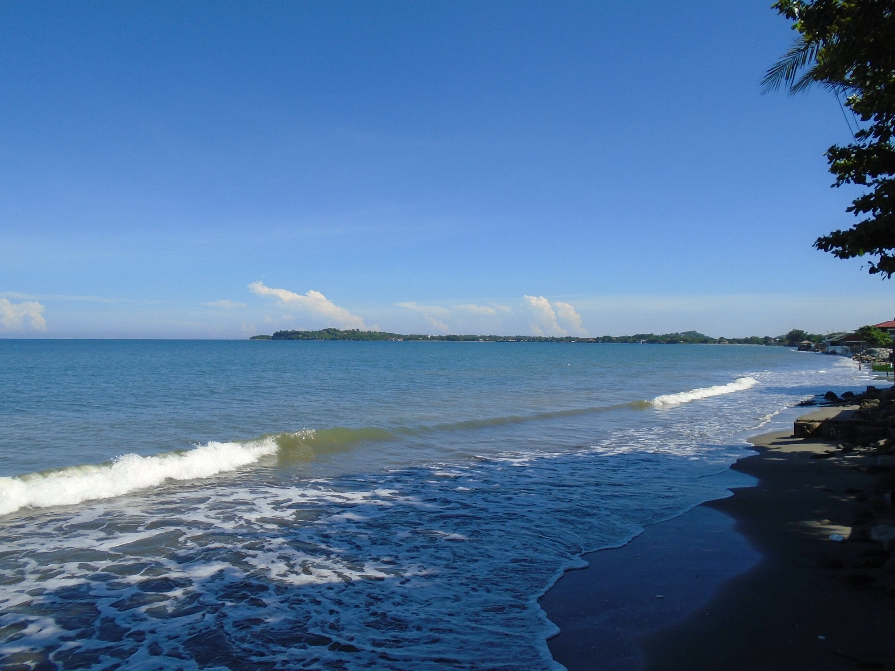
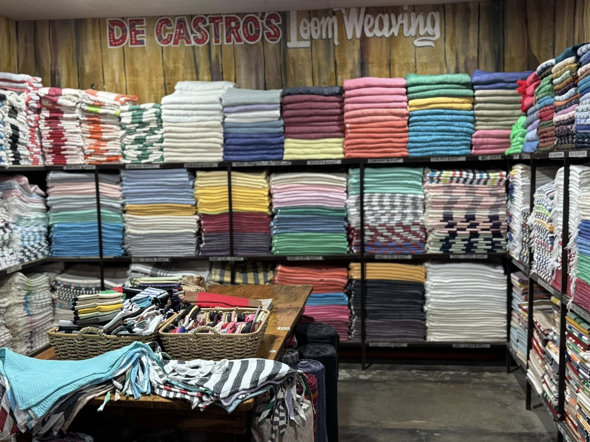

The Wonders of La Union ("Elyu")
Nestled between the rolling Cordillera mountains and the warm blue waters of the Lingayen Gulf and South China Sea, La Union is a vibrant haven of surf culture, centuries-old Ilokano heritage, refreshing waterfalls, and blooming eco-tourism.
World-Class Surfing & Shores
Home to San Juan, the undisputed Surfing Capital of Northern Luzon, alongside pristine pebble shores in Luna and golden coastlines from Rosario to Balaoan.
Centuries of Heritage & Faith
Discover historic Spanish watchtowers, the Basilica Minore of Our Lady of Charity in Agoo, Pindangan Ruins in San Fernando, and authentic Abel Iloko handlooms in Bangar.
Eco-Adventures & Valleys
Trek to the breathtaking cascading Tangadan Falls in San Gabriel, zipline through lush mountain valleys in Pugo, or relax in Bauang's fruitful vineyards.
Explore All 20 Municipalities & City
From the bustling capital City of San Fernando to the highland ridges of Santol and Burgos, each town offers a unique blend of culture, culinary delights, and breathtaking landscapes.

.png)




.png)
.png)


.png)

.jpg)
Spotlight on Tourist Attractions
Explore classified destinations categorized under the Provincial Tourism Framework into Emerging (new frontiers), Existing (established icons), and Potential (eco-tourism development).
Tangadan Falls
Majestic 50-foot cascading two-tiered waterfall with crystal clear natural swimming lagoons, cliff jumps, and scenic bamboo rafting.
Urbiztondo Surf Beach
The beating heart of Northern Luzon surf culture. Consistent point breaks, surfing academies, craft cafes, and sunset coastal gatherings.
Immuki Island Lagoons
A serene eco-sanctuary featuring natural tidal rock pools, mangrove canals, and turquoise snorkeling lagoons tucked away along the coastline.
Luna Baluarte & Pebble Beach
A 400-year-old Spanish fortress sentinel standing guard over the world-famous pebble stone shoreline and the shimmering West Philippine Sea.

Bauang Vineyards & Agri-Parks
Lush grape vineyards where visitors can harvest fresh Red Cardinal grapes right off the vine and taste locally pressed fruit wines.
Aringay Centennial Tunnel
A 500-meter historic railroad tunnel engineered during the Spanish and American colonial era carving through lush mountain foothills.
Discounts & Partner Vouchers
Earn Elyu Points while visiting tourist sites and redeem them for real savings at top local restaurants, surf schools, resorts, and souvenir shops!
How The Points Mechanism Works
The more you explore La Union, the more rewards you unlock. Intan Elyu uses a gamified incentive system to distribute tourism impact across all municipalities.
Explore & Travel
Browse the app, pick tourist spots across 20 municipalities, and check live travel fares.
GPS & Photo Check-in
Verify your physical arrival using geolocation or AR camera check-ins to receive instant points.
Level Up & Badges
Rise from Novice Explorer to Elyu Master, unlocking badges and leaderboard ranks.
Redeem Real Perks
Exchange your accumulated points for partner food vouchers, surf lessons, and souvenirs.